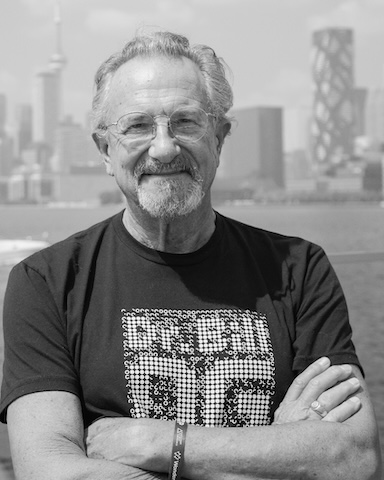

Elements · 2026
Five living
elements.

Sky Above Clouds (space, ethereal), Tumbleweeds (air — gusting wind moving dead plants), Bull Kelp Dive (water), Spelunker (earth — cave walking into the earth), and yuleFire (fire) complete Dr. Bill Kolomyjec’s internal pentagram of the classical elements. Five autonomous generative systems. Click any work to read the full text and open the live piece.